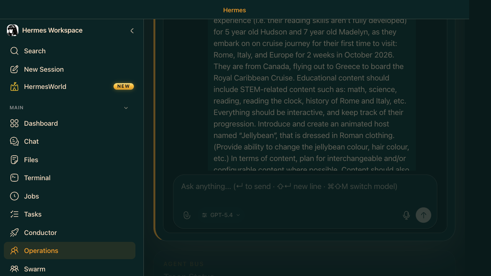
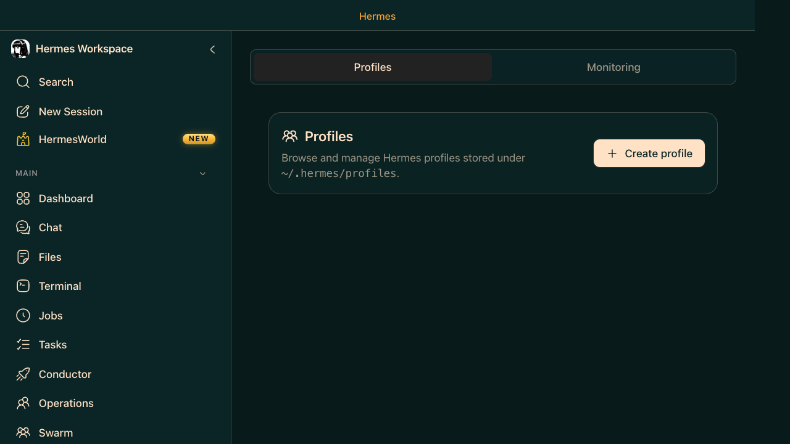

Vibe Coder Case Study — Verified 4-Agent Sequential Pipeline
A real, verified run — not a hypothetical. 4 agents ran in sequence through Operations: Researcher compares options, Writer drafts a recommendation + code, Vetter actually runs the code and catches a real bug, Orchestrator reports the final status in plain English. Every step below actually happened, including the mistakes.
- Researcher (Sage) — plotly vs bokeh vs altair, 13 cited sources
- Writer (Scribe) — recommendation + Python code stub
- Vetter (Ops) — ran the code, caught a real bug → NEEDS REVISION
- Orchestrator — 3-sentence status + next action

Why sequential, not parallel
Real orchestration = distinct agents + a real handoff, not concurrency. Sequential (researcher → writer → reviewer) is a legitimate pattern. What disqualifies a run: one agent doing every step itself, no matter how many tool calls it makes.

Where to vet handoffs and output
| View | Shows you |
|---|---|
| Agent's own Chat session | Full audit trail: every tool call + the exact handoff text it received |
| Operations → Outputs tab | Quick consolidated summary across all agents |
Manual relay here, not automated — each agent's last message becomes the next one's first message. Open each Chat session in order to audit the full chain.

Out-of-the-box vs. custom — don't conflate these
| Agent | Status | Detail |
|---|---|---|
| Orchestrator | 100% out-of-box | Pre-existing; never touched. |
| Scribe | ~90% out-of-box | Default persona already matched the need. |
| Sage | Prompt rewritten | Default is an X/Twitter growth persona (verified in agent-presets.ts), not research. |
| Ops | Prompt rewritten | Default is a business-strategy analyst, not QA. |
~/.hermes/profiles/<name>/config.yaml forever. Write a generic, reusable persona instead — task specifics belong in the message, not the profile.Confirmed bug + fix — zsh crashes Swarm workers
Tried hermes kanban swarm first — graph created fine, but every worker crashed instantly: the tmux launcher (swarm-dispatch.ts) captured exit codes with status=$?, and status is read-only in zsh. Verified directly (zsh -c 'status=$?' reproduces on demand); confirmed not a network issue (npm registry reachable). Fixed: renamed to exit_code.
Only the Swarm/tmux path hits this bug. The Operations pipeline above works with zero fix needed.
Live Setup — Step by Step
- Confirm gateway + Workspace UI running (Phase 0)
- Operations → New Agent → pick a preset → rewrite description + system prompt to be generic (once)
- Send Researcher the task; wait for it to finish
- Copy its output into a new agent's (Writer) task message
- Copy Writer's output into a new agent's (Vetter) task message, ask for a verdict
- Send the Orchestrator a short status summary of all 3 results
- Review each agent's Chat session to audit the chain
Checklist — What You Actually Need to Fix or Check
A consolidated list, pulled from everything found during this run. Not every item applies to every machine — check the symptom column before assuming you need the fix.
| Symptom | Fix |
|---|---|
| Copilot/TLS cert errors | Install pip-system-certs + truststore |
SSL guard NotImplementedError after above | Set HERMES_SKIP_SSL_GUARD=1 in ~/.hermes/.env |
token expired or invalid: 401 despite gh auth status OK | hermes auth list → remove stale duplicate Copilot creds |
| Gateway port 8642 won't bind / flapping | Try hermes gateway run --replace — but it can race and kill the gateway outright; if so, just run plain hermes gateway run again |
| Profile | Problem | Fix |
|---|---|---|
| Sage | Default persona is an X/Twitter growth agent, not research | Rewrite ~/.hermes/profiles/sage/config.yaml system_prompt to a generic research persona — once, permanently |
| Ops | Default persona is a business-strategy analyst, not QA | Same fix, generic QA/vetter persona |
| Builder / Trader | Not yet tested — check before trusting the default | (open item) |
| Any profile used unattended | Must not include "ask a clarifying question if ambiguous" | Use "assume + flag, never pause mid-flight" instead |
| Symptom | Fix |
|---|---|
Swarm workers crash instantly, zsh: read-only variable: status | Patch hermes-workspace/src/routes/api/swarm-dispatch.ts — rename status to exit_code |
- "Operation interrupted" happens occasionally — just say "please continue."
- The Update button and dismiss-X on notification banners sit close together — easy misclick.
- Harmless React console warnings (duplicate keys) — cosmetic only.